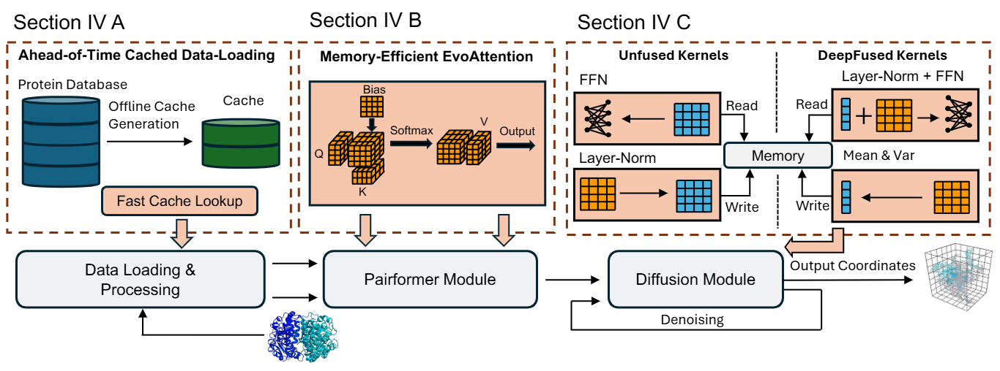

News
- 2025-06 MegaFold paper and code are released!
Protein structure prediction models such as AlphaFold3 (AF3) push the frontier of biomolecular modeling by incorporating science-informed architectural changes to the transformer architecture. However, these advances come at a steep system cost, introducing: compute- and memory-intensive operators, 2D attention mechanisms, and retrieval-augmented data pipelines, which collectively hinder the scalability of AF3 training. In this work, we present MegaFold, a cross-platform system to accelerate AF3 training. MegaFold tackles key bottlenecks through ahead-of-time caching to eliminate GPU idle time from the retrieval-augmented data pipeline, Triton-based kernels for memory-efficient EvoAttention on heterogeneous devices, and deep fusion for common and critical small operators in AF3. Evaluation on both NVIDIA H200 and AMD MI250 GPUs shows that MegaFold reduces peak memory usage of AF3 training by up to 1.23x and improves per-iteration training time by up to 1.73x and 1.62x respectively. More importantly, MegaFold enables training on 1.35x longer sequence lengths compared to PyTorch baselines without running out-of-memory, significantly improving the scalability of modern protein folding models.

We evaluate MegaFold through extensive experiments, demonstrating its ability to significantly reduce memory consumption, accelerate training speeds, and support longer sequence lengths—all while maintaining computational precision. Our evaluation suggests that MegaFold reduces peak memory usage of AF3 training by up to 1.23x and improves per-iteration training time by up to 1.73x and 1.62x respectively. More importantly, MegaFold enables training on 1.35x longer sequence lengths compared to PyTorch baselines without running out-of-memory, significantly improving the scalability of modern protein folding models. Indeed, our results show robust scalability across multi-GPU systems on both NVIDIA and AMD hardware.
@misc{la2025megafoldsystemleveloptimizationsaccelerating,
title={MegaFold: System-Level Optimizations for Accelerating Protein Structure Prediction Models},
author={Hoa La and Ahan Gupta and Alex Morehead and Jianlin Cheng and Minjia Zhang},
year={2025},
eprint={2506.20686},
archivePrefix={arXiv},
primaryClass={q-bio.BM},
url={https://arxiv.org/abs/2506.20686},
}